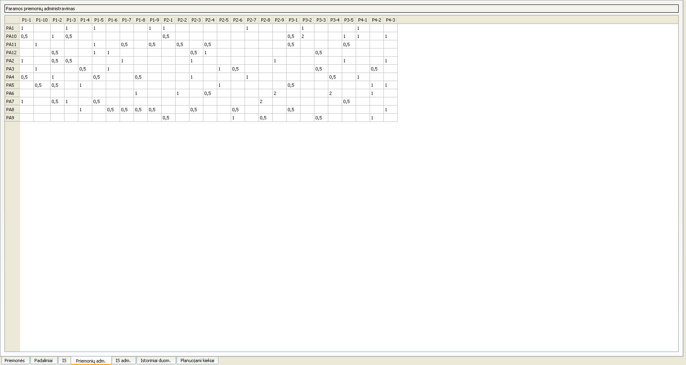

Naudojantis šia sąsaja, galima:
- Pridėti laiką, kurį sugaišo padalinys, administruodamas konkrečią paramos priemonę, dukart spustelėjus ant atitinkamo lauko;
- Keisti laiką, kurį sugaišo padalinys, administruodamas konkrečią paramos priemonę, dukart spustelėjus ant atitinkamo lauko.
